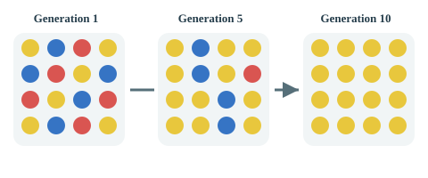
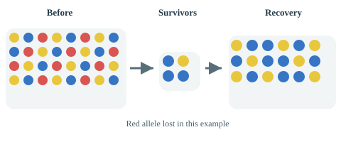
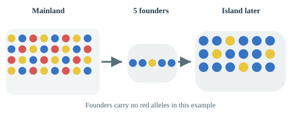

Explore founder effects, bottlenecks and allele-frequency change across a mainland and two islands.
Runs locally • GitHub Pages ready
Three ways chance changes populations
A. Genetic drift

Random changes in allele frequency from one generation to another. In small populations, chance has a particularly large effect. An allele may eventually disappear or become fixed even when it has no selective advantage.
B. Population bottleneck

A large population suddenly becomes very small. The few survivors carry only a random sample of the original genetic variation. Even if the population subsequently recovers numerically, some genetic diversity may have been lost permanently.
C. Founder effect

A small number of individuals leave the original population and establish a new one. By chance, the founders may have very different allele frequencies from the mainland. Their descendants inherit this unrepresentative genetic sample.
How do the alleles interact?
Read before starting
Each organism carries two copies of the same gene (one inherited from each parent). This model has three possible alleles: Y (yellow), B (blue) and R (red). Alleles are not organisms or different genes: they are alternative versions of one gene.
Neither allele is fully dominant over another. In the model, individuals with two different alleles show a blended colour (a simplified form of incomplete dominance).
YYYellowY + Y
BBBlueB + B
RRRedR + R
YBGreenY + B
YROrangeY + R
BRPurpleB + R
How are alleles inherited?
Each parent passes one of its two alleles at random to an offspring. For example, crossing YB × RR can produce YR (orange) or BR (purple), each with a 50% probability in this simplified model.
Colour ≠ allele frequency
A green YB individual carries one Y and one B allele, not a “green allele”. Count the alleles, not just the organism colours. For example, YY + YB + BR contains 3 Y, 2 B and 1 R among six gene copies: Y = 50%, B ≈ 33.3%, R ≈ 16.7%.
Why this matters: Every genotype has the same survival and reproduction chances in this model. If blue becomes common or red disappears, that is genetic drift (chance), not evidence that one colour is better adapted. This is a simplified teaching model, not a universal rule for real-world colour inheritance.
Simulation settings
Ready. Set up a population, then step or start.
Populations Generation 0
Y B R
Mainland
Island 1 from Mainland
Island 2 from Island 1
Allele frequencies through time
Each line shows the proportion of one allele in the selected population, not the proportion of individuals of that colour.
Student practical: ten founder events 0 / 10
Click Record next run to generate one independent experiment automatically: a new mainland, five founders for Island 1, then 100 generations of evolution. Each click adds the final mainland and Island 1 allele frequencies to the table. Repeat ten times. Students calculate allele differences and allele loss in the worksheet. The free-play simulation above remains separate.
0 of 10 results recorded. Click Record next run to generate and save a complete experiment.
Run
Generations after founding
Main Y
Main B
Main R
Island Y
Island B
Island R
Student analysis: From your recorded values, calculate the differences in allele frequencies, the number of alleles lost, and the percentage of runs with allele loss. These answers are intentionally not generated by the application.
Generate 42 independent five-founder populations, each evolved for 100 generations after founding, to compare final allele frequencies across the class. This demonstration does not calculate or identify allele loss.